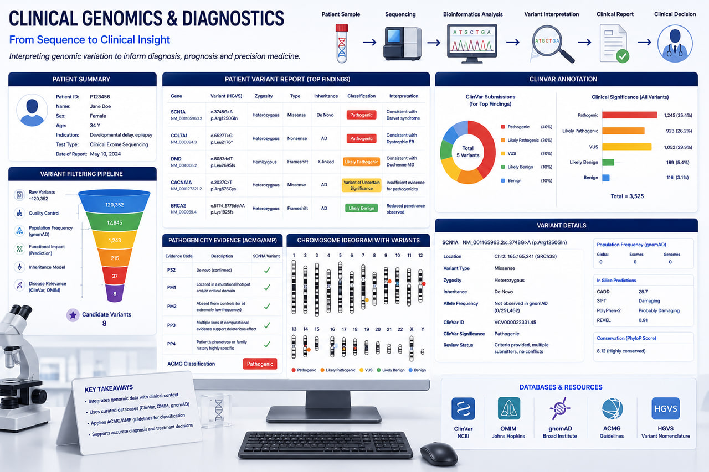

Knowledge Base
Whitepapers, blogs, scientific publications, and real-world case studies across genomics, drug discovery, and regulatory toxicology.

Welcome to the RASA Life Science Informatics Knowledge Base. Here, we share our latest research, insights, and methodologies in computational genomics, NGS data analysis, structural bioinformatics, and regulatory toxicology.
Explore our collection of technical whitepapers, articles, peer-reviewed scientific publications, and detailed case studies demonstrating how our informatics solutions drive breakthrough discoveries and compliance in life sciences.
What's Inside the Knowledge Base
Whitepapers
In-depth technical whitepapers on bioinformatics methods, analysis pipelines, and regulatory science.
View whitepapers →Blogs
Articles and practical insights on genomics, NGS, computational drug discovery, and precision medicine.
Read the blog →Publications
Peer-reviewed publications and scientific contributions from our bioinformatics team.
See publications →Case Studies
Real-world projects across NGS, drug discovery, and regulatory toxicology with measurable outcomes.
Explore case studies →Need scientific guidance for your program?
Talk to our team in Pune, India about your genomics, drug discovery, or regulatory toxicology project.
Start a Project